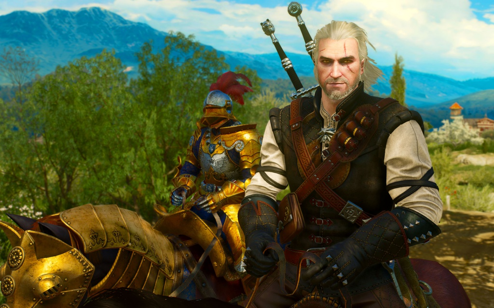

The Witcher

A játék főhőse Ríviai Geralt, mutáns szörnyvadász, azaz witcher. A játékos a történet elejétől a végéig őt irányítja, és fejleszti a játék során teljesíthető küldetésekkel, valamint szörnyek megölésével, amiért tapasztalati pont (XP) jár. Szintlépéskor bronz-, ezüst-, illetve aranypontokat kap, ezek elosztásával lehet Geralt különböző tulajdonságait fejleszteni. A történet során különféle felszereléseket is lehet szerezni, például páncélokat, kardokat, amelyek idővel egyre jobbak lesznek. Időnként csatlakoznak a játékoshoz más szereplők is, felettük azonban nem lehet átvenni az irányítást.
- Műfaj: Akció-szerepjáték
- Egyjátékos mód
- Zeneszerző: Adam Skorupa, Paweł Błaszczak
- Motor: Aurora Engine
- Verzió: 1.5
- Magyar nyelvű szinkron és felirat
The Witcher 2:
Assassins of Kings

A The Witcher 2 játékmenete jelentősen eltér elődjétől. A harc például sokkal összetettebb, a csapdák elhelyezésének, valamint a távolsági fegyverek célzásának és dobásának képességei révén. A főhősnek, Geraltnak továbbfejlesztett támadó és védekező arzenálja van, közelharci és távolsági fegyverek, páncélok, bombák, csapdák és másodlagos fegyverek, például csatabárdok és lapátok széles választékával.
- Műfaj: Akció-szerepjáték
- Egyjátékos mód
- Zeneszerző: Adam Skorupa, Krzysztof Wierzynkiewicz
- Motor: REDEngine
- Verzió: 2.1
The Witcher 3: Wild Hunt

A The Witcher 3-ban a játékosnak szintén különböző fegyverei vannak,
beleértve a bombákat, a számszeríjat és két kardot (egy acél és egy ezüst).
Geralt az acélkardot elsősorban az emberek megölésére használja, míg az ezüstkard a szörnyek ellen hatékony.
Kétféle közelharci támadás létezik; a könnyű támadás, ami gyors, de gyenge, és a nehéz támadás, ami lassú, de erős.
A játékos a kardjaival védheti ki az ellenséges támadásokat.
A felszerelés tartóssága korlátozott, és rendszeres javítást igényel.
A fizikai támadások mellett Geraltnak öt mágikus jel áll a rendelkezésére:
Aard, Axii, Igni, Yrden és Quen.
- Műfaj: Akció-szerepjáték
- Egyjátékos mód
- Zeneszerző: Marcin Przybyłowicz, Mikolai Stroinski
- Motor: REDengine, PhysX, SpeedTree
- Verzió: 4.0